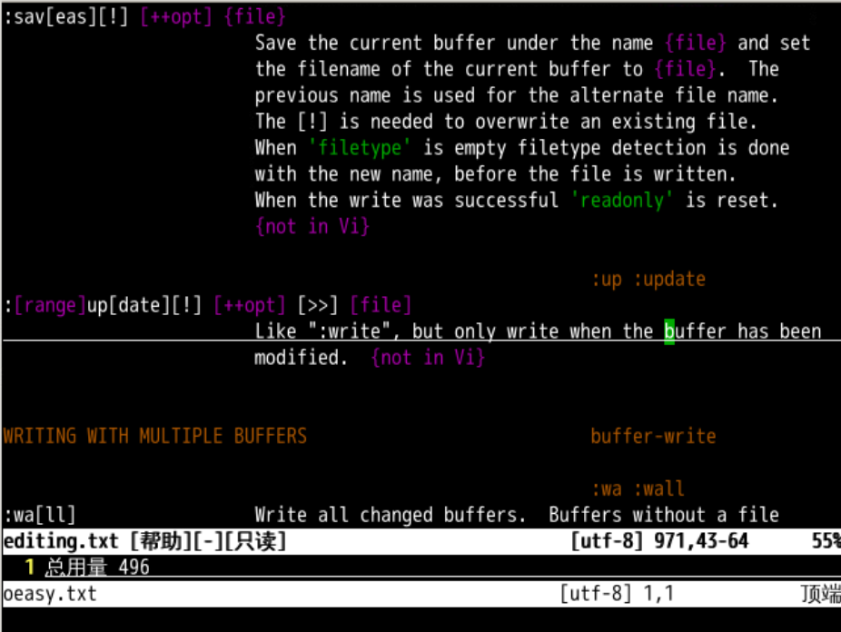
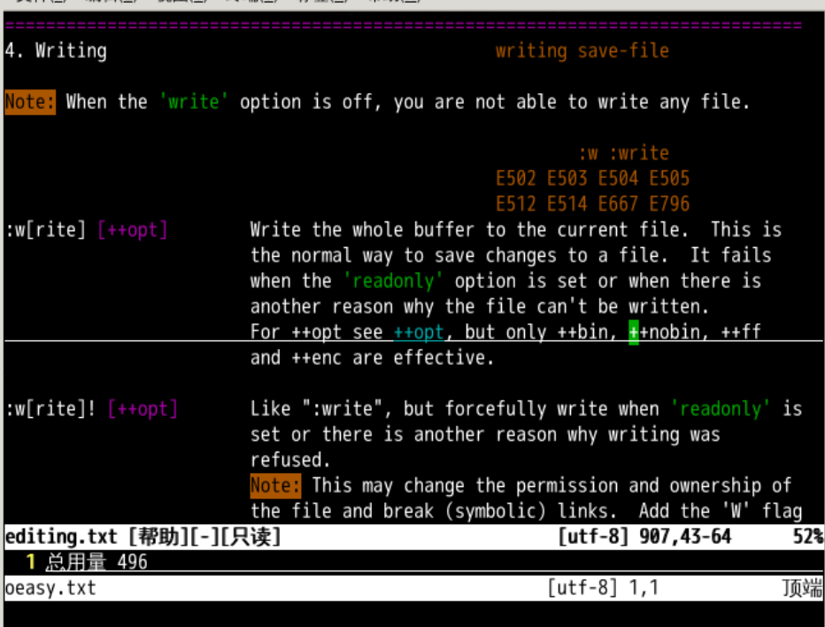
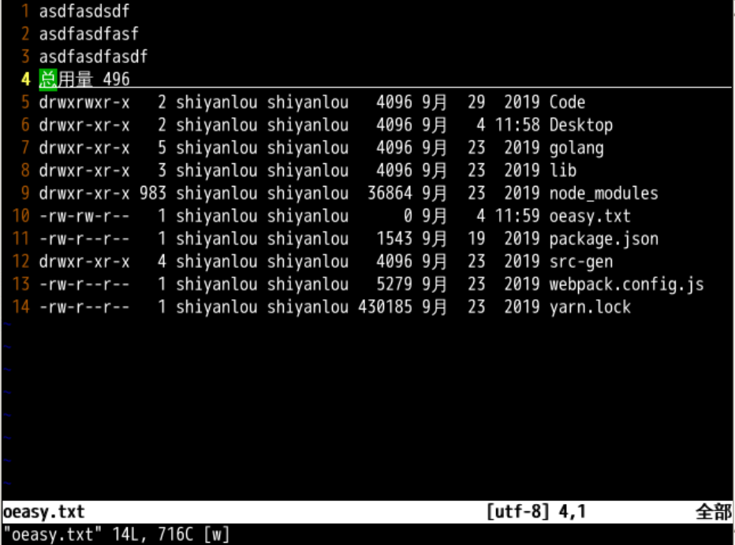
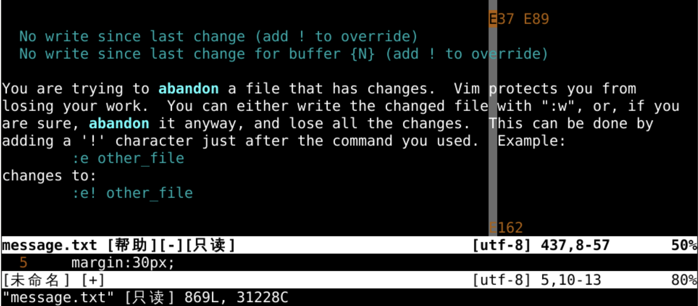
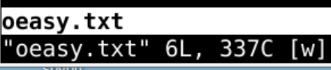

另存与保存
回忆上节课内容🤔

- 我们上次进入了插入模式
- 从正常模式，按i，进插入模式
- 从插入模式，按ctrl+c 退回到正常模式
- 这次我们想想应该如何保存这个文件
ls -l . > oeasy.txt
vi oeasy.txt
保存文件
- 首先要查询
save相关的帮助📕 :h save- 只是找到了
saveas {file} - 这一看就是
另存为啊

- 我们来试一下 i 进入插入模式
- 随便打字 🅰️
- 然后另存为
:saveas o2z.txt - 这个
o2z.txt是saveas的参数,也就是保存的文件名 - 然后退出
:q
cat o2z.txt
可以看到另存的 o2z.txt 真的被保存下来了！🤪，但是能否直接保存当前文件呢？
直接存储
- 我们再次打开
oeasy.txt - 我们继续查帮助
:h save - 往上翻

write 命令
- 找到了一个
:w[rite]命令 - 复杂写法是
:write - 简单写法是
:w - 我们再对文件进行修改
- 注意文件名
oeasy.txt[+]中那个[+]，就是有修改但是未保存的标志

- 如果不保存直接退出
vim就会报错
vim的报错
- 再修改一下文件
[+]又出来了
- 如果没有保存文件就想
:q的话 - 会报
E37错误 - 这是啥意思？
- 什么不会就
:h什么
- 面对报错怎么办呢？
查询报错
- 我们明确地知道错误是E37
- 那么我们就查询报错信息
- 我们可以直接
:h E37查询这个错误的详细信息

- 报错是好事
- 能让我们知道错在哪里
- 知道了之后
:q退出报错子窗口- 这次再来存储
保存细节
- 状态横条的上有
- 文件名
- oeasy.txt
- 未保存标记
- [+]
- 文件名
- :w回车之后
保存后
- 在最下面一行：
- 文件名
- oeasy.txt
- 行数
- 6L
- 字符数
- 337C
- 文件名

这时候我们再退出
- 先执行操作
:q - 再执行
cat查看oeasy.txt - 真的已经被修改了！！！🤪
总结
- 这次我们学会了另存为命令
:saveas {file} - 还有直接保存命令
:w - 真的可以把修改的内容保存了😃
- 还有什么可玩的？🤔
- 我们下次再说！👋